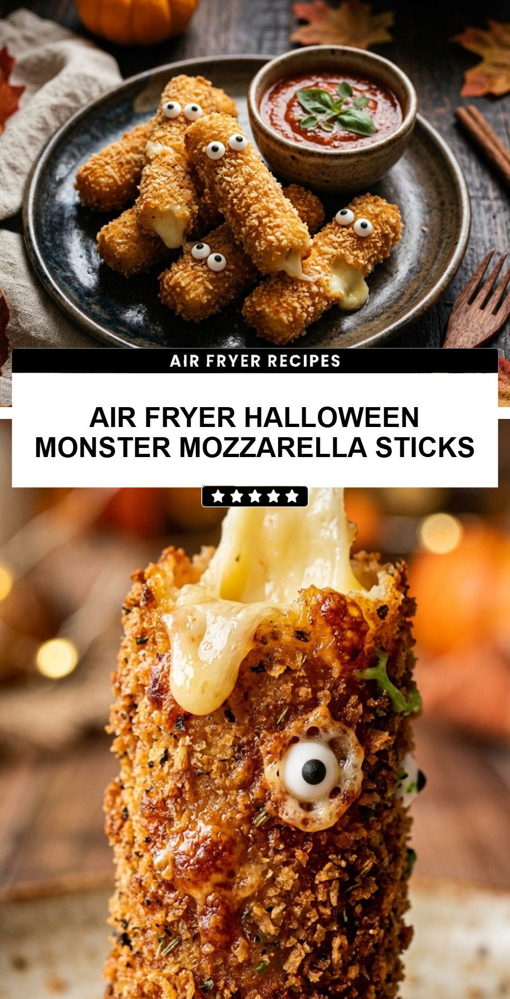

Air Fryer Halloween Monster Mozzarella Sticks
October 19, 2026

Get ready for a spooky snack that is as fun to look at as it is to eat! These Air Fryer Halloween Monster Mozzarella Sticks are the perfect addition to any October gathering or a fun after-school treat for the kids. With their vibrant neon green coating and silly googly eyes, they bring a touch of “monstrous” charm to your appetizer table without the mess of deep frying.
Recipe Information
Prep Time: 20 minutes
Cook Time: 6 minutes
Total Time: 26 minutes
Servings: 6 servings
Difficulty Level: Easy
Nutrition Information
Calories per serving: 210 kcal
Protein: 11g
Carbohydrates: 15g
Fat: 12g
Fiber: 1g
Sugar: 2g
Sodium: 480mg